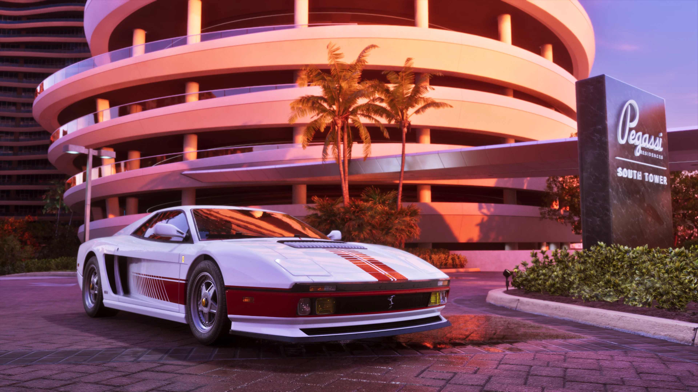
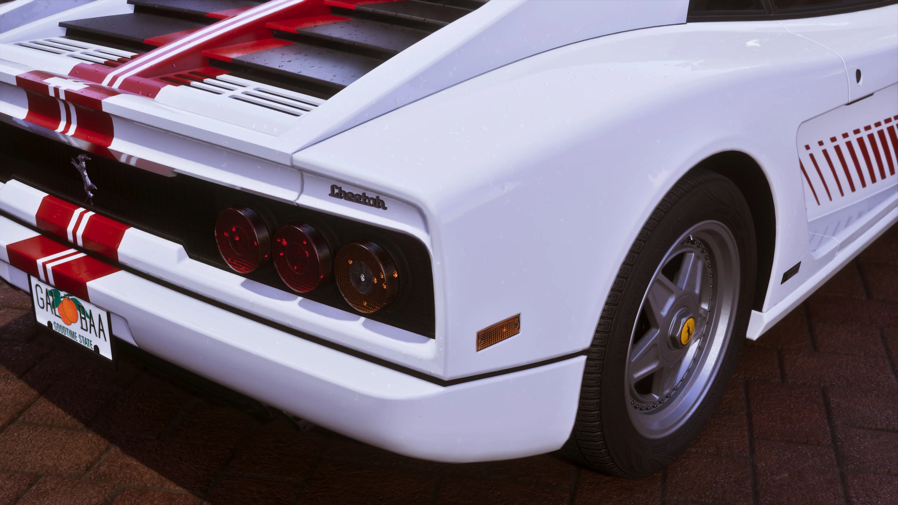
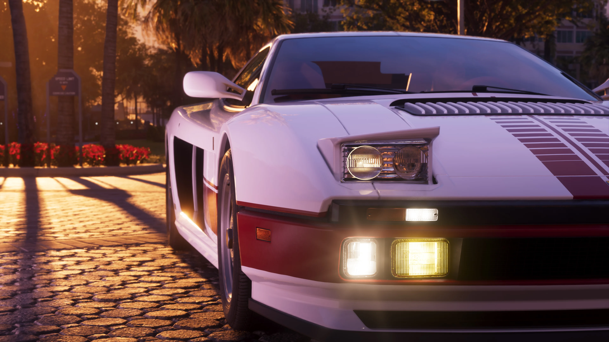

’95 Grotti Cheetah
O ’95 Grotti Cheetah é um veículo oficialmente apresentado pela Rockstar Games entre os conteúdos do Grand Theft Auto VI Ultimate Edition Upgrade. Quatro screenshots próprios já foram publicados, enquanto informações como desempenho, preço e personalização continuam sem detalhamento oficial.

O que sabemos sobre o ’95 Grotti Cheetah
A Rockstar Games identifica oficialmente o veículo como ’95 Grotti Cheetah.
Ele faz parte do Grand Theft Auto VI Ultimate Edition Upgrade, incluído na Ultimate Edition. Proprietários da Standard Edition também poderão adquirir esse Upgrade separadamente.
A biblioteca oficial de GTA VI possui ainda quatro imagens dedicadas ao veículo, identificadas de ’95 Grotti Cheetah 01 a 04.

Ainda não confirmado: velocidade, aceleração, preço dentro do jogo, localização, quantidade de ocupantes, catálogo de cores e opções específicas de personalização do ’95 Grotti Cheetah.

Quatro screenshots dedicados ao Cheetah
O ’95 Grotti Cheetah recebeu uma sequência própria de quatro imagens dentro da biblioteca oficial de Grand Theft Auto VI.
Esse material permite registrar diferentes ângulos e detalhes visuais do veículo antes do lançamento.
As diferenças vistas entre as imagens, porém, não são tratadas como confirmação de cores selecionáveis, peças modificáveis ou outras opções de personalização.
Galeria oficial do ’95 Grotti Cheetah
Veja as quatro imagens publicadas oficialmente pela Rockstar Games para o veículo.

Aparências do ’95 Grotti Cheetah
Depois do lançamento, esta área poderá reunir as variações realmente disponíveis no jogo, usando screenshots próprios quando necessário.
As imagens oficiais atuais ajudam a documentar o visual do veículo, mas não confirmam por si só um catálogo de pinturas ou modificações disponíveis ao jogador.
O que poderá ser modificado?
A Rockstar ainda não detalhou as opções específicas de personalização disponíveis para este veículo. Por isso, esta ficha não atribui modificações ao Cheetah antes que elas possam ser confirmadas.
Pintura
Cores, acabamentos e combinações serão registrados somente após confirmação.
Modificações visuais
Rodas, componentes externos e outras peças dependerão de verificação no jogo.
Desempenho
Melhorias relacionadas a motor, aceleração ou outras características ainda não foram detalhadas.
’95 Grotti Cheetah em gameplay
Quando GTA VI estiver disponível, esta área poderá receber um vídeo próprio do GTA6Zoone mostrando o veículo diretamente no jogo.
Esse conteúdo poderá registrar condução, câmera, interior, som, danos, desempenho e as opções de personalização que realmente existirem.
Dados que ainda precisam ser verificados
Estes campos só receberão informações quando houver uma fonte oficial suficiente ou quando puderem ser testados diretamente em Grand Theft Auto VI.
Preço
Valor ou forma de obtenção dentro do jogo.
Localização
Onde encontrar, guardar ou adquirir o veículo.
Velocidade
Desempenho observado ou informado oficialmente.
Aceleração
Resposta do veículo e comparação com outros modelos.
Ocupantes
Capacidade real do veículo.
Interior
Detalhes da cabine observados diretamente no jogo.
Danos
Comportamento visual após impactos e colisões.
Comparativos
Testes com outros veículos do catálogo.
O que podemos afirmar hoje
Essa é a denominação usada oficialmente pela Rockstar Games.
O veículo aparece oficialmente entre os conteúdos incluídos no Upgrade.
Proprietários da Standard Edition poderão adquirir o Ultimate Edition Upgrade pelas lojas da plataforma.
A Rockstar publicou quatro imagens próprias do ’95 Grotti Cheetah, numeradas de 01 a 04.
Rockstar Games
Esta página usa informações publicadas oficialmente pela Rockstar Games sobre o ’95 Grotti Cheetah e as edições de Grand Theft Auto VI.